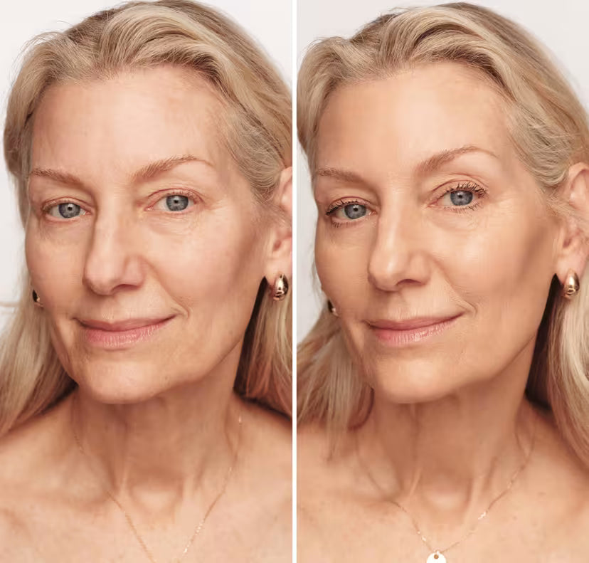

Raison n°1 : Tu n'auras plus jamais à deviner ta teinte

8 femmes sur 10 portent la mauvaise teinte de fond de teint. Sans le savoir.
Tu choisis "Beige Naturel" en magasin. Tu rentres confiante. Le lendemain matin, en pleine lumière du jour : ton visage est orange. Ou gris. Ou trop rose.
Et avec les années, c'est pire. Le teint devient moins uniforme. Les rougeurs apparaissent. Les taches aussi. Trouver la bonne teinte devient un casse-tête.
Ce fond de teint s'ajuste au contact de ta peau. Tu l'appliques. Il trouve ta teinte tout seul.
Teint clair, moyen, plus hâlé. Peu importe. Le rendu est naturel. Comme ta peau. En mieux.